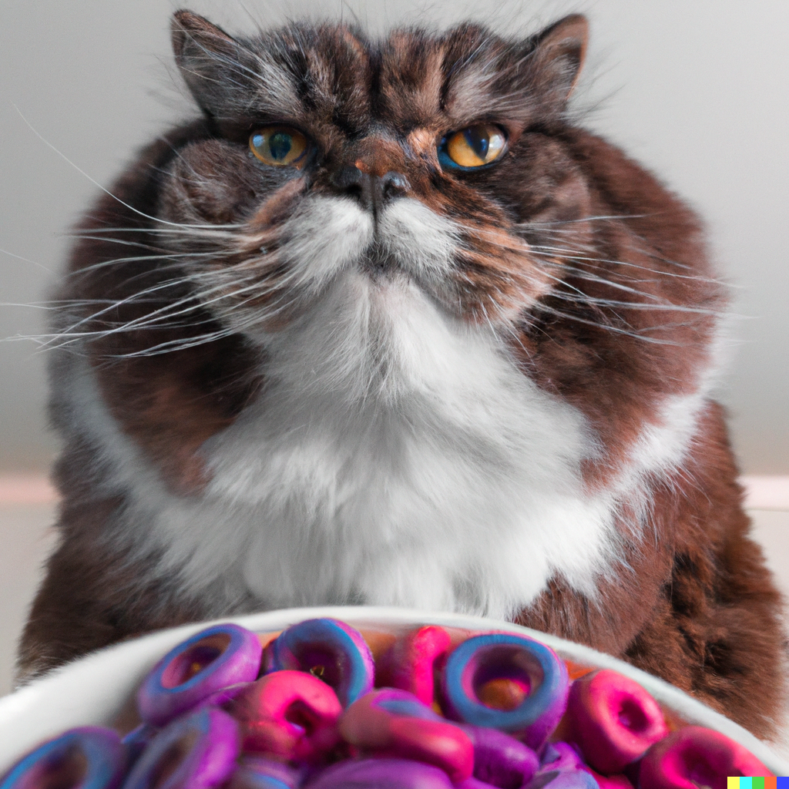

2 A primer on functional programming
What you’ll have learned by the end of the chapter: writing your own functions, functional programming basics (map, reduce, anonymous functions and higher-order functions).
2.1 Introduction
Functional programming is a way of writing programs that relies exclusively on the evalutation of functions. Mathematical functions have a very neat property: for any given input, they ALWAYS return exactly the same output. This is what we want to achieve with the functions that we will write. Functions that always return the same result are called pure, and a language that only allows writing pure functions is called a pure functional programming language. R is not a pure functional programming language, so we have to be careful not to write impure functions that manipulate the global state.
But what is state? Run the following code in your console:
ls()This will list every object defined in the global environment. Now run the following line:
x <- 1and then ls() again. x should now be listed alongside the other objects. You just manipulated the state of your current R session. Now if you run something like:
x + 1This will produce 2. We want to avoid pipelines that depend on some definition of some global variable somewhere, which could be subject to change, because this could mean that 2 different runs of the same pipeline could produce 2 different results. Notice that I used the verb avoid in the sentence before. This is sometimes not possible to avoid. Such situations have to be carefully documented and controlled.
As a more realistic example, imagine that within the pipeline you set up, some random numbers are generated. For example, to generate 10 random draws from a normal distribution:
rnorm(n = 10) [1] -0.37878546 1.04254352 0.66026056 -0.24408351 0.24304541 1.95434503
[7] 0.77199984 -0.05125006 -1.62012272 0.61451491Each time you run this line, you will get another set of 10 random numbers. This is obviously a good thing in interactive data analysis, but much less so when running a pipeline programmatically. R provides a way to fix the random seed, which will make sure you always get the same random numbers:
set.seed(1234)
rnorm(n = 10) [1] -1.2070657 0.2774292 1.0844412 -2.3456977 0.4291247 0.5060559
[7] -0.5747400 -0.5466319 -0.5644520 -0.8900378But set.seed() only works for one call, so you must call it again if you need the random numbers again:
set.seed(1234)
rnorm(10) [1] -1.2070657 0.2774292 1.0844412 -2.3456977 0.4291247 0.5060559
[7] -0.5747400 -0.5466319 -0.5644520 -0.8900378rnorm(10) [1] -0.47719270 -0.99838644 -0.77625389 0.06445882 0.95949406 -0.11028549
[7] -0.51100951 -0.91119542 -0.83717168 2.41583518set.seed(1234)
rnorm(10) [1] -1.2070657 0.2774292 1.0844412 -2.3456977 0.4291247 0.5060559
[7] -0.5747400 -0.5466319 -0.5644520 -0.8900378The problem with set.seed() is that you only partially solve the problem of rnorm() not being pure; this is because while rnorm() now does return the same output for the same input, this only works if you manipulate the state of your program to change the seed beforehand. Ideally, we would like to have a pure version of rnorm(), which would be self-contained and not depend on the value of the seed defined in the global environment. There is a package developped by Posit (the makers of RStudio and the packages from the tidyverse), called {withr} which allows to rewrite our functions in a pure way. {withr} has several functions, all starting with with_ that allow users to run code with some temporary defined variables, without altering the global environment. For example, it is possible to run a rnorm() with a seed, using withr::with_seed():
library(withr)
with_seed(seed = 1234, {
rnorm(10)
}) [1] -1.2070657 0.2774292 1.0844412 -2.3456977 0.4291247 0.5060559
[7] -0.5747400 -0.5466319 -0.5644520 -0.8900378But ideally you’d want to go a step further and define a new function that is pure. To turn an impure function into a pure function, you usually only need to add some arguments to it. This is how we would create a pure_rnorm() function:
pure_rnorm <- function(..., seed){
with_seed(seed, rnorm(...))
}
pure_rnorm(10, seed = 1234) [1] -1.2070657 0.2774292 1.0844412 -2.3456977 0.4291247 0.5060559
[7] -0.5747400 -0.5466319 -0.5644520 -0.8900378pure_rnorm() is now self-contained, and does not pollute the global environment. We’re going to learn how to write functions in just a bit, so don’t worry if the code above does not make sense yet.

A very practical consequence of using functional programming is that loops are not used, because loops are imperative and imperative programming is all about manipulating state. However, there are situations where loops are more efficient than the alternative (in R at least). So we will still learn and use them, but only when absolutely necessary, and we will always encapsulate a loop inside a function. Just like with the example above, this ensures that we have a pure, self-contained function that we can reason about easily. What I mean by this, is that loops are not always very easy to decipher. The concept of loops is simple enough: take this instruction, and repeat it N times. But in practice, if you’re reading code, it is not possible to understand what a loop is doing at first glance. There are only two solutions in this case:
- you’re lucky and there are comments that explain what the loop is doing;
- you have to let the loop run either in your head or in a console with some examples to really understand whit is going on.
For example, consider the following code:
suppressPackageStartupMessages(library(dplyr))
data(starwars)
sum_humans <- 0
sum_others <- 0
n_humans <- 0
n_others <- 0
for(i in seq_along(1:nrow(starwars))){
if(!is.na(unlist(starwars[i, "species"])) &
unlist(starwars[i, "species"]) == "Human"){
if(!is.na(unlist(starwars[i, "height"]))){
sum_humans <- sum_humans + unlist(starwars[i, "height"])
n_humans <- n_humans + 1
} else {
0
}
} else {
if(!is.na(unlist(starwars[i, "height"]))){
sum_others <- sum_others + unlist(starwars[i, "height"])
n_others <- n_others + 1
} else {
0
}
}
}
mean_height_humans <- sum_humans/n_humans
mean_height_others <- sum_others/n_othersWhat this does is not immediately obvious. The only hint you get are the two last lines, where you can read that we compute the average height for humans and non-humans in the sample. And this code could look a lot worse, because I am using functions like is.na() to test if a value is NA or not, and I’m using unlist() as well. If you compare this mess to a functional approach, I hope that I can stop my diatribe against imperative style programming here:
starwars %>%
group_by(is_human = species == "Human") %>%
summarise(mean_height = mean(height, na.rm = TRUE))# A tibble: 3 × 2
is_human mean_height
<lgl> <dbl>
1 FALSE 172.
2 TRUE 177.
3 NA 181.Not only is this shorter, it doesn’t even need any comments to explain what’s going on. If you’re using functions with explicit names, the code becomes self-explanatory.
The other advantage of a functional (also called declarative) programming style is that you get function composition for free. Function composition is an operation that takes two functions g and f and returns a new function h such that \(h(x) = g(f(x))\). Formally:
h = g ∘ f such that h(x) = g(f(x))∘ is the composition operator. You can read g ∘ f as g after f. When using functional programming, you can compose functions very easily, simply by using |> or %>%:
h <- f |> gf |> g can be read as f then g, which is equivalent to g after f. Function composition might not seem like a big deal, but it actually is. If we structure our programs in this way, as a sequence of function calls, we get many benefits. Functions are easy to test, document, maintain, share and can be composed. This allows us to very succintly express complex workflows:
starwars %>%
filter(skin_color == "light") %>%
select(species, sex, mass) %>%
group_by(sex, species) %>%
summarise(
total_individuals = n(),
min_mass = min(mass, na.rm = TRUE),
mean_mass = mean(mass, na.rm = TRUE),
sd_mass = sd(mass, na.rm = TRUE),
max_mass = max(mass, na.rm = TRUE),
.groups = "drop"
) %>%
select(-species) %>%
tidyr::pivot_longer(-sex, names_to = "statistic", values_to = "value")# A tibble: 10 × 3
sex statistic value
<chr> <chr> <dbl>
1 female total_individuals 6
2 female min_mass 45
3 female mean_mass 56.3
4 female sd_mass 16.3
5 female max_mass 75
6 male total_individuals 5
7 male min_mass 79
8 male mean_mass 90.5
9 male sd_mass 19.8
10 male max_mass 120 Needless to say, writing this in an imperative approach would be quite complicated.
Another consequence of using functional programming is that our code will live in plain text files, and not in Jupyter (or equivalent) notebooks. Not only does imperative code have state, but notebooks themselves have a (hidden) state. You should avoid notebooks at all costs, even for experimenting.
2.2 Defining your own functions
Let’s first learn about actually writing functions. Read chapter 7 of my other book.
The most important concepts for this course are discussed in the following sections:
- functions that take functions as arguments (section 7.4)
- functions that take data (and the data’s columns) as arguments (section 7.6);
2.3 Functional programming
You should ideally work through the whole of chapter 7, and then tackle chapter 8. What’s important there are: